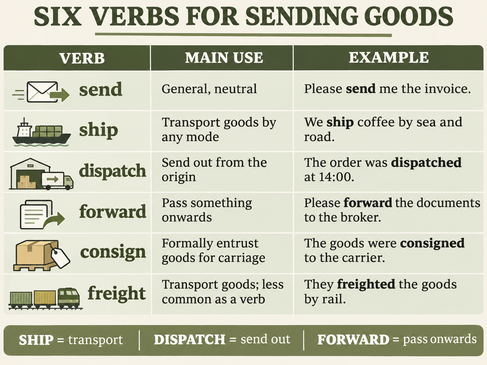
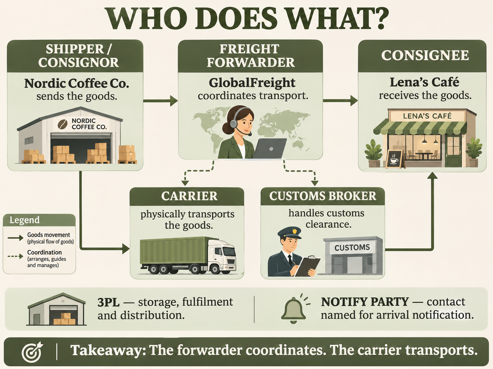
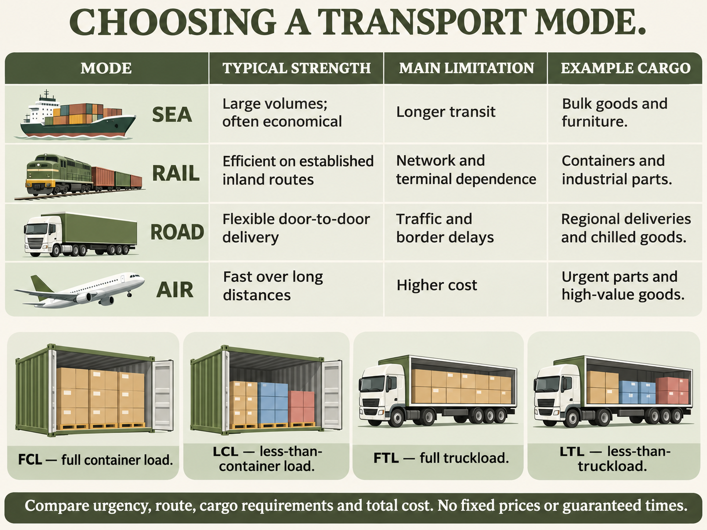
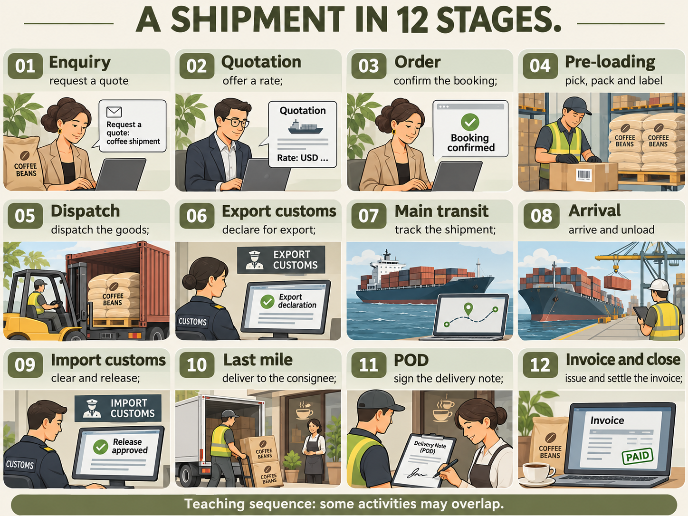
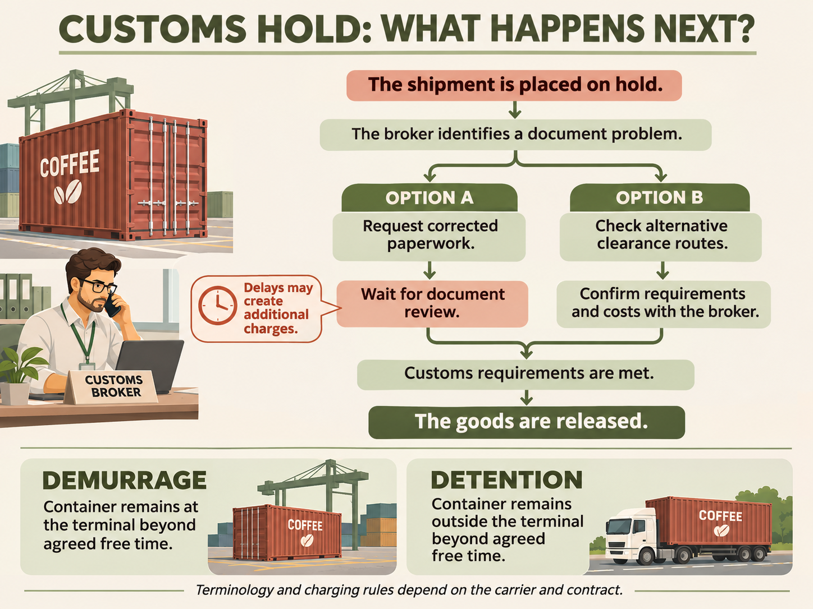
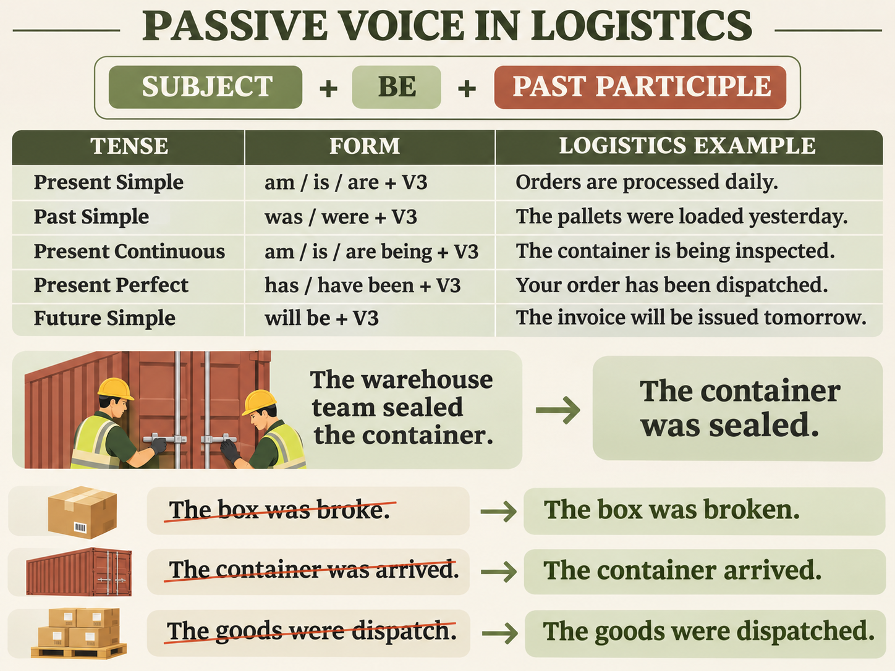
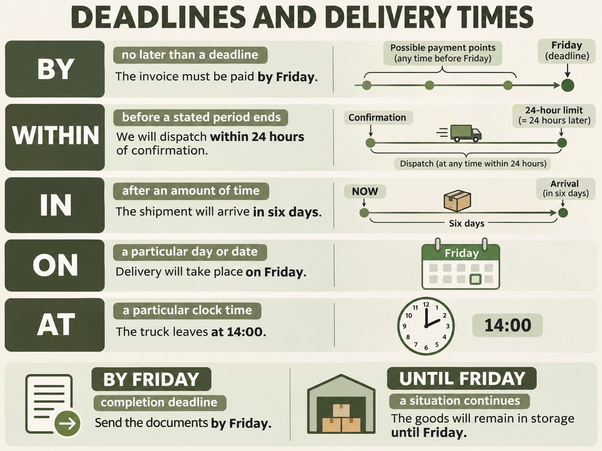
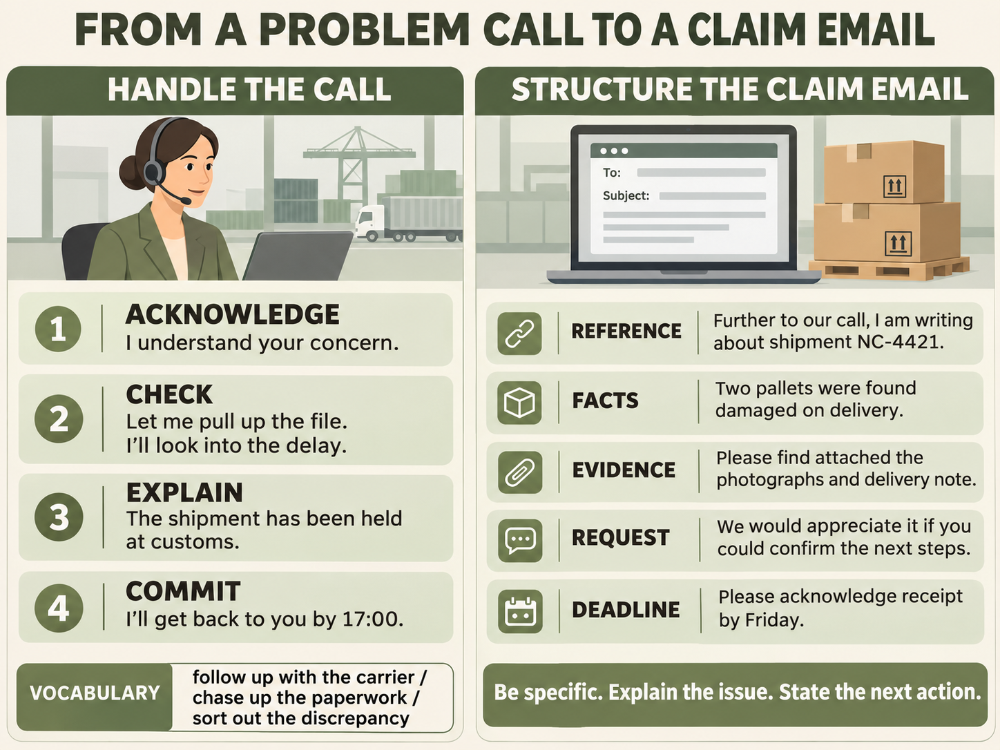

This is a themed, teaching-first walkthrough — not a test. You will follow one running case study, Nordic Coffee Co. ships to Lena's Café, from the first order through a messy customs hold and a damage claim. Every piece of logistics English enters in context: new vocabulary appears as events happen to the shipment, every exercise is preceded by a short teaching card explaining the pattern before you practise it, and three short audio clips let you hear the language on the phone.
a quote → order → dispatch → transit → customs problem → delivery → damage claim → recap. New vocab enters each stage; nothing is tested cold. Three audio clips: a warehouse voicemail, a customs phone call, a radio news report on port congestion.
Before we go into the language, let's open the file. Every drill in this lesson refers back to this one shipment.
Shipper: Nordic Coffee Co. · Hamburg, Germany
Consignee: Lena's Café · Novosibirsk, Russia
Cargo: 8 pallets of specialty Arabica coffee beans · approximately 2,000 kg
Mode: sea + rail + last-mile truck
Reference: NC-4421
Answer in one sentence each. There are no trick questions — this is about reading the file carefully.
English has several verbs for sending a shipment, and they are not interchangeable. Learn the register of each one.

| Verb | Register / use | Typical sentence |
|---|---|---|
| send | neutral, universal, all contexts | We sent two pallets to Hamburg on Monday. |
| ship | business standard, any mode (sea/road/air) | The goods will be shipped this Friday from our warehouse. |
| dispatch | formal, operations language; the moment of leaving | Your order was dispatched at 14:00 today. |
| forward | shipper → forwarder → carrier chain | Please forward the documents to the customs broker. |
| consign | formal, contract language (hand over to a carrier) | The cargo was consigned to Maersk under B/L 4451. |
| freight | verb form, less common, mostly US business | They freighted the entire lot by rail to minimise cost. |
Fill in the correct verb from §01a. If more than one is possible, pick the most natural one for the register.
Choose the verb that fits the register best.
Seven parties in every international consignment. Know who does what — so you can address the right person in your email.

| Party | What they do | You contact them when... |
|---|---|---|
| shipper / consignor | sends the goods; usually the seller or exporter | you need the packing list, invoice, origin certificate |
| consignee | receives the goods; usually the buyer or importer | you confirm delivery window, unloading, signature |
| freight forwarder | books and coordinates transport on behalf of the shipper | you need rates, routing, documents, tracking |
| carrier | physically moves the goods (shipping line, airline, trucker) | something goes wrong in transit — delay, damage, lost container |
| customs broker | clears goods through customs on your behalf | customs holds the shipment, duty calculation, HS code issues |
| 3PL | third-party logistics provider; warehousing + distribution | you need storage, pick-and-pack, last-mile delivery |
| notify party | a third contact listed on the Bill of Lading, informed on arrival | when the importer wants their office or agent alerted too |
Pick the right party for each situation.
Answer in one sentence. Compare with the key.
These show up in every warehouse phone call and operations email. Learn them as units — not word by word.
Complete each sentence with a phrasal verb from §01c (use the correct form).
Say the sentence out loud, replacing the Russian phrase in brackets with the right English phrasal verb.
Every quote starts with this decision. Learn the trade-offs in English.

| Mode | Lead time | Cost per kg | Typical cargo |
|---|---|---|---|
| Sea freight (FCL/LCL) | 20–45 days | lowest | bulk goods, furniture, raw materials, slow-moving stock |
| Rail | 12–25 days (Asia–EU) | low | containers, automotive parts, electronics (Russia & Central Asia) |
| Road | 2–12 days (intra-continent) | medium | time-sensitive shipments, reefer cargo, door-to-door |
| Air freight | 1–5 days | highest (3–8× sea) | urgent parts, pharma, high-value electronics, product launches |
For each shipment, pick the most sensible mode. There is usually one right answer.
Say whether each shipment goes FCL (full container) or LCL (groupage).
Walk the warehouse with me. Nine areas — name each one and the verbs that happen there.
| Area | What happens | Key verbs |
|---|---|---|
| receiving dock | inbound trucks arrive, goods are unloaded | receive, unload, check in, verify |
| staging area | temporary zone before putaway | stage, inspect, sort, label |
| racking / shelving | long-term storage of pallets or cartons | put away, store, slot, retrieve |
| pick face | fast-moving stock at ground level for picking | pick, replenish, scan |
| packing station | orders are boxed, labelled, documented | pack, wrap, label, seal |
| dispatch bay | outbound area for loading trucks | dispatch, load, release |
| loading bay / dock | the physical loading door; truck backs in | back up, load, secure |
| cold chain / reefer zone | temperature-controlled storage | chill, maintain temperature, monitor |
| returns / reverse logistics | damaged or refused shipments come back here | return, inspect, refurbish, write off |
A warehouse worker describes an action. Where in the warehouse is it happening?
A container's life, from quote to invoice settlement. We'll hit each stage in the Nordic Coffee story.

Customer asks for a quote: origin, destination, volume.
quote / rate requestForwarder sends rates, transit time, surcharges.
offer / validity / surchargeCustomer confirms. Booking opened with the carrier.
confirm / book / referenceGoods picked, packed, labelled at origin warehouse.
pick / pack / sealContainer leaves origin; dispatch note issued.
depart / load / dispatchExport clearance at origin port or airport.
clear / declare / exportSea / air / rail / road leg; days or weeks in motion.
in transit / ETA / trackVessel or truck arrives at destination hub.
arrive / berth / offloadClearance at destination; duty, VAT, inspection.
clear / release / duty / VATTruck from port or hub to consignee's door.
deliver / unload / signProof of Delivery signed and returned.
POD / sign-off / confirmFinal invoice issued; case closed.
invoice / settle / closeEach sentence describes what is happening right now in a shipment. Which stage of the 12 is it?
For each stage, write the single most important verb you would use in an email or on the phone.
Listen first, then read along. Each one is 20–35 seconds — a real moment from the Nordic Coffee shipment.
Match each line from the three dialogues to the speaker: Warehouse manager (W), Driver (D), Forwarder (F), Customer (C), or Carrier agent (A).
Based on the three dialogue transcripts. If a detail is not mentioned at all, choose "Not given".
Fill in the missing word from each transcript. Listen again if needed.
Click a card to flip and see meaning plus example. Learn front and back.
Fill in past simple (V2) and past participle (V3) — passive voice lives on V3.
| V1 (base) | V2 (past simple) | V3 (past participle) |
|---|---|---|
| dispatch | ||
| consign | ||
| send | ||
| load | ||
| break | ||
| take | ||
| pay | ||
| lose | ||
| cost | ||
| hold | ||
| deliver | ||
| issue |
dispatch / dispatched / dispatched · consign / consigned / consigned · send / sent / sent · load / loaded / loaded · break / broke / broken · take / took / taken · pay / paid / paid · lose / lost / lost · cost / cost / cost · hold / held / held · deliver / delivered / delivered · issue / issued / issued
Match the verb with the noun that naturally follows it.
Put the verb in brackets into the correct passive form (tense from context).
Before we follow the Nordic Coffee shipment, step back and read a short piece about the industry itself. Thirty key industry words are in bold; you'll find them in the glossary below. The drills at the end work on the vocabulary from both this text and §02.
A few weeks ago a colleague who had just retired gave me a thick logistics manual. I thumbed through it affectionately, expecting a dry read, and instead got intrigued by the opening chapter. The author managed to get the reader snatched by a simple but powerful argument: that containerisation — the humble metal box introduced in the 1950s — had been the single most groundbreaking innovation in global shipping.
The book was insightful on every page. It explained how a shipper, more formally the consignor of a cargo, hands goods over to a carrier — the company that physically moves them — while a freight forwarder in the middle coordinates the whole chain. Behind every delivery sit the quieter functions: supplier relationships, procurement contracts, purchasing cycles, warehousing, inventory control and maintenance schedules all tie into one picture.
Before containers, bulk shipping boxes such as crates, cotton bales and loose cargo lifted by slings were the vernacular of every port. Loading a ship was slow, dirty and dangerous work. With containerisation, intermodal shipments — ship to rail to truck without ever unpacking — became normal. The utility of the humble container was that it restored dignity and predictability to a trade that had been chaotic for centuries.
At the far end of the chain, a courier or a haulage contractor (also called a haulier) delivers to the consignee. Every one of today's transportation modes, from ocean freight to last-mile parcel delivery, still rests on that single mid-century invention.
| English | Russian | Example in context |
|---|---|---|
| thumb through | пролистывать | I thumbed through the manual over coffee. |
| get intrigued | заинтриговаться | I got intrigued by the opening chapter. |
| get snatched by | быть захваченным (вниманием) | Readers get snatched by a simple but powerful argument. |
| groundbreaking | прорывной | Containerisation was a groundbreaking innovation. |
| insightful | проницательный, глубокий | The book was insightful on every page. |
| affectionately | с любовью, нежно | I thumbed through the manual affectionately. |
| crate | ящик (деревянный, грузовой) | Crates were the standard shipping unit before containers. |
| transportation modes | виды перевозок | Every transportation mode rests on this invention. |
| vernacular | обиходный язык, уклад | Crates and bales were the vernacular of every port. |
| intermodal shipments | мультимодальные перевозки | Intermodal shipments move ship-to-rail-to-truck. |
| utility | польза, практическая ценность | The utility of the container is its standardised size. |
| dignity | достоинство, уважение | Containerisation restored dignity to port work. |
| procurement | закупки (стратегические) | Procurement contracts are signed yearly. |
| purchasing | закупки (оперативные) | Purchasing handles day-to-day orders. |
| maintenance | обслуживание | The fleet runs on a 30-day maintenance cycle. |
| inventory | товарно-материальные запасы | We hold 35 days of inventory on A-items. |
| warehousing | складирование | Warehousing costs rose 12% last year. |
| carrier | перевозчик | Maersk is the carrier on the sea leg. |
| freight forwarder | экспедитор | GlobalFreight is our freight forwarder. |
| supplier | поставщик | Our main supplier is based in Guangzhou. |
| haulage contractor / haulier | автотранспортная компания | A haulier handles the final truck leg. |
| courier | курьер (пассажирская / мелкая доставка) | A courier will pick up the parcel at 11:00. |
| consignee | грузополучатель | Lena's Café is the consignee. |
| consignor | грузоотправитель | Nordic Coffee Co. is the consignor. |
| bulk shipping boxes | крупногабаритные грузовые ящики | Bulk shipping boxes were replaced by containers. |
| cargo | груз | The cargo is temperature-sensitive. |
| containerisation | контейнеризация | Containerisation changed world trade in one generation. |
| cotton bales | кипы/тюки хлопка | Cotton bales were lifted into the hold by crane. |
| shipping | грузоперевозки (общий термин) | Global shipping is still 90% of world trade by volume. |
| slings | стропы (петли для подъёма груза) | Dockers wrapped slings around heavy crates. |
Choose the best English equivalent of the Russian word in brackets, based on the text.
Decide who is who in each situation.
Answer each in one short sentence based on the text above.
Say each term out loud with the stress pattern. Then listen to the reference (read by a UK voice).
| Term | Phonetic hint | Stress |
|---|---|---|
| consignee | /ˌkɒn·saɪˈniː/ | CON-si-NEE (stress on last) |
| consignor | /kənˈsaɪ·nɔːr/ | con-SIGH-nor |
| freight | /freɪt/ | FRAYT (rhymes with "late") |
| freight forwarder | /freɪt ˈfɔː·wə·dər/ | FRAYT FOR-wər-dər |
| containerisation | /kənˌteɪ·nə·raɪˈzeɪ·ʃən/ | con-tay-nə-raɪ-ZAY-shən |
| procurement | /prəˈkjʊə·mənt/ | pro-CURE-ment |
| warehousing | /ˈweə·haʊ·zɪŋ/ | WAIR-how-zing |
| intermodal | /ˌɪn·tə·ˈməʊ·dəl/ | in-tə-MO-dəl |
| haulier | /ˈhɔː·li·ər/ | HAW-li-ər (UK); US: hauler |
| demurrage | /dɪˈmʌr·ɪdʒ/ | di-MUR-rij |
Our case study begins. Read — new words are bold; we will come back to them in §05.
Mikael Jensen, head of operations at Nordic Coffee Co., opened his inbox at eight in the morning and found a new enquiry from Russia. Lena Petrova, owner of Lena's Café in Novosibirsk, was asking for a quotation on eight pallets of specialty Arabica beans — roughly two thousand kilograms — to be delivered before the end of the month. Mikael had worked with Lena twice before. The relationship was straightforward: clear payment terms, no last-minute changes.
Within an hour, Mikael had drafted a quotation and forwarded it to GlobalFreight, the freight forwarder the company had been using for the past three years. The quote covered the ocean leg from Hamburg to St. Petersburg, rail transit onwards to Novosibirsk, and the last-mile delivery by truck. Total transit time: around twenty-two days.
GlobalFreight came back by lunchtime with a confirmed booking. Container reference MSKU 7721184 — a forty-foot high-cube — would be loaded at the Nordic Coffee warehouse on Wednesday morning. The vessel was scheduled to depart Hamburg on Friday evening, with an ETA at the Russian port of ninth of November. From St. Petersburg, the container would move inland by rail. GlobalFreight would appoint a local broker in Novosibirsk to handle customs clearance on arrival.
By Monday afternoon, everything was in place. The packing list, the commercial invoice, and the certificate of origin had been prepared. The Bill of Lading would be issued once the vessel sailed. Mikael emailed Lena to confirm and attached the booking reference. She replied within the hour: «Perfect, thank you. Looking forward to it.»
Nothing about this shipment looked unusual. Nordic Coffee had moved hundreds of similar consignments over the years, and the rail-sea combination from Hamburg to Novosibirsk had become routine. Mikael closed the file and moved on to the next order in his queue.
Based only on what the text says. If a detail is not in the text, pick "Not given".
Scan the text for a specific number or name. Write in English.
Each word is used in the text. Choose the best meaning in that context.
Number these six events 1–6 in the order they happened in the text.
Write a one-sentence summary of the reading (20–30 words). Then open the model summary to compare.
Before the container can be dispatched, we check three documents side by side. There are two planted mistakes. Find them, then write the short message you would send to accounts.
Ref: NC-4421
Goods: Arabica beans
Pallets: 8
Gross weight: 2,000 kg
Ready: Wed 5 Nov
Ref: NC-4421
Goods: Arabica beans
Pallets: 7
Gross weight: 2,000 kg
Ready: Wed 5 Nov
Ref: NC-4421
Goods: Arabica beans
Pallets: 8
Gross weight: 2,000 kg
Ready: Thu 6 Nov
Write one short email message (2–3 sentences) to your colleague in accounts to query the discrepancies.
Why this matters: at customs clearance, mismatched numbers are the fastest way to get a container placed on hold — exactly the situation we see later in §07.
Loading day. The warehouse manager leaves a voicemail for Mikael. Listen, then open the transcript.
[Beep]
Match the party to their role in the Nordic Coffee case.
Fill in the missing letters. First two and last letter are given.
On Wednesday morning the eight pallets were pid from racking A-14, then pad and lad with the Novosibirsk destination code. The forty-foot container was then lod at bay four, sed with seal number 448721, and did to the port.
At the port the container was ind by security and then placed in the stak to wait for the vessel. The Bill of Lading was isd once the ship sailed on Friday evening. Over the following week Mikael could trk the container on the carrier's portal and watch its progress eastward.
On arrival at St. Petersburg the container was offd from the vessel and prepared for the rail leg to Siberia. The coe — Lena's Café — was notified by email that the shipment had crossed the border.
Before the container could leave the port, it had to clr Russian import customs. The broker started the process on Monday morning. Two days later the goods were red and loaded onto the rail wagon bound for Novosibirsk.
Not every shipment goes smoothly. Here's where the case gets complicated.
The container has stopped moving. Which of these four reasons do you think the text will give? Pick one before you read — you will confirm or correct your guess at the end of the reading.
The correct prediction was #1 — missing or incorrect paperwork. The certificate of origin was issued in the wrong format (standard EUR.1 instead of the EAEU-specific form). The other three options are all plausible real-world reasons a container could stop moving — that's why they make good distractors — but the text specifically names paperwork.

The container arrived in Novosibirsk early on Monday morning, exactly on schedule. Lena had already warned her baristas that the new Arabica would be in by Wednesday. Then came the phone call from the broker: Russian customs had placed a hold on the shipment.
The reason was a technicality. The certificate of origin accompanying the goods had been issued in the wrong format — a standard EUR.1 instead of the specific form required by the Eurasian Economic Union. Without the correct document, customs would not release the container, and every day of delay was accumulating demurrage charges at the terminal.
The broker explained the options. Option one: wait for Nordic Coffee to re-issue the certificate in the correct format, which could take three to five working days. Option two: pay the full duty at the standard, non-preferential rate, clear the goods immediately, and recover the overpayment later through a refund claim. Lena chose option one. The beans were valuable; the quick-clearance route would cost almost three times the saving.
Mikael, back in Hamburg, received the news by email that afternoon. He apologised, contacted his documentation team, and promised a corrected certificate by Thursday morning. In the meantime, the container sat in the terminal yard, racking up a demurrage bill of roughly one hundred euros per day.
On Thursday the new certificate arrived. By Friday afternoon the container had been cleared and released. The rail wagon moved out of the terminal that evening. Lena's Café finally received delivery on Monday, one week later than planned. The specialty beans were saved, but the shipment had turned from routine into a case study of what happens when a single piece of paperwork is wrong.
The broker calls Mikael to explain the hold. Listen twice.
In business logistics writing, passive voice appears twice as often as in ordinary speech. Here's why — and how to use it well.

1 · Standard processes — the executor is obvious or doesn't matter.
2 · Explaining a problem — focus on WHAT, not WHO. This sounds more professional and avoids blame.
3 · Status updates — standard business English register.
| Mistake | Wrong | Right |
|---|---|---|
| Forgot «be» | The goods shipped yesterday. | The goods were shipped yesterday. |
| V2 instead of V3 | The box was broke. | The box was broken. |
| Passive with intransitive verb | The container was arrived. | The container arrived. |
Not every sentence needs to be passive. In professional writing you choose based on what you want to emphasise: the status, the responsibility, or the commitment. Match each sentence to its function.
Takeaway: don't convert everything to passive. A good professional email mixes all three in one paragraph: passive status → active responsibility → active commitment.
A client has emailed: «Where is my shipment?» Write a 3-sentence reply that uses, in order: (1) passive status, (2) active responsibility, (3) active commitment with a deadline.
Delivery windows and deadlines are a minefield of tiny preposition choices. Get them wrong and you look unprofessional. Here's the system.

| Preposition | Meaning | Logistics example |
|---|---|---|
| by | deadline — no later than | The invoice must be paid by Friday. |
| within | in a period, from now | We'll dispatch within 24 hours of order confirmation. |
| in | after this amount of time | The container will arrive in six days. |
| on | specific day | Delivery is scheduled on 28 November. |
| at | specific clock time | The truck leaves at 14:00. |
A radio bulletin from the logistics trade press. Listen and get the gist.
A 250-word background text explaining the pattern behind individual shipment problems. Read for gist.
For most of the last thirty years, global logistics operated on a simple principle: move goods fast, hold as little stock as possible, and trust that the main trade routes will always be open. The result was a highly efficient but fragile system. A single disruption — a strike, a storm, a political incident — could ripple through supply chains for months.
Recent years have exposed this fragility. The Ever Given blocked the Suez Canal for six days in 2021 and cost global trade an estimated nine billion dollars. The COVID pandemic triggered a container shortage that lasted eighteen months. Houthi attacks in the Red Sea from late 2023 forced over eighty per cent of Asia-Europe ocean capacity onto the Cape of Good Hope route, adding ten to fourteen days of transit and billions in extra costs.
In response, large shippers are rethinking old assumptions. Many have moved from just-in-time to just-in-case, rebuilding safety stock to thirty or forty days of cover. Others are investing in nearshoring, moving production closer to their main markets — Mexico for the United States, Türkiye and Morocco for Europe. A few have gone further and built regional supply chains that duplicate inventory on each continent.
For the individual freight forwarder, the lesson is operational rather than strategic. Build in buffer time. Watch chokepoints — Suez, Panama, Taiwan Strait, Hormuz. And communicate early and clearly with customers, because the next disruption is never a question of if, only when.
Flip to self-check. Target: 18/20 cold.
Ten patterns to steal into your emails and calls. Memorise shape, not just example.
| Pattern | Use | Example |
|---|---|---|
| In light of ... | framing an action against a background | In light of the ongoing delay, we are proposing a revised ETA. |
| With a view to ...ing | explaining intention | With a view to minimising further delay, we have rebooked the shipment. |
| Should ... persist | polite conditional | Should the hold persist beyond Friday, we will escalate to customs HQ. |
| As per ... | referring to an agreement or document | As per our contract, payment falls due 14 days after POD. |
| Kindly note that ... | polite notification | Kindly note that demurrage is accruing from today. |
| Further to ... | continuing an earlier thread | Further to our call this morning, please find the revised quote attached. |
| We regret to inform you that ... | formal bad news | We regret to inform you that the shipment has been delayed at customs. |
| We would appreciate it if ... | polite request | We would appreciate it if the paperwork could be sent by end of day. |
| Please find attached ... | attachment reference | Please find attached the updated packing list and commercial invoice. |
| I will revert by ... | commitment to respond | I will revert by 17:00 with a confirmed delivery window. |
Read each flat line. Say or write the upgraded version. Then open the sample to self-check.
Each card gives a scenario and the target expression. Write the sentence. Open to compare.
A full writing task in 5 steps: read the incident file, find the 5 parts of a good claim, draft a plan, write your own, check against the list.

Shipment: NC-4421
Delivered: 30 November 2026, 15:40
Pallets received: 8 of 8
Pallets affected: 2 (pallet nos. 3 and 7)
Problem: torn outer bags, wet outer packaging on the two pallets — approximately 240 kg of coffee beans contaminated and non-sellable
Evidence: 14 photographs taken on delivery · damage note added to signed POD
Request: confirm the claims procedure and the full list of documents required from us
Response deadline: 2 December 2026, close of business
Study the five labelled parts on the infographic: REFERENCE, FACTS, EVIDENCE, REQUEST, DEADLINE. Every good claim email has these five parts, in that order.
[REFERENCE] Further to our call yesterday, I am writing to formally raise a claim in respect of shipment reference NC-4421, delivered to our premises on 30 November 2026.
[FACTS] Two of the eight pallets — nos. 3 and 7 — were found to be damaged. The outer packaging had been crushed and approximately 240 kilograms of coffee beans had been contaminated and must be written off.
[EVIDENCE] Fourteen photographs taken at the time of unloading and the signed POD with the damage note attached are enclosed with this email.
[REQUEST] Kindly confirm the claims procedure and the full list of documents required from us to submit the formal claim.
[DEADLINE] We would appreciate your initial response by close of business on 2 December.
Before you write, note down one sentence per part:
Your text starts here. Use the write area below.
Two tasks. Record yourself for self-check.
Tell the whole story of shipment NC-4421 from enquiry to final delivery, using the 12 stages from §01f. Target: at least 12 terms from §13 and 5 passive forms from §09.
Your teacher plays Lena Petrova — a tired, slightly impatient client. You are the forwarder. Three tough questions will come your way:
Use phrases from Dialogue 3 in §01g (Let me pull up the file / I apologise for the inconvenience / I'll look into it / I will revert by). Explain the process — don't make excuses.
You have just finished Task B. Now — mid-call — your broker emails you with new information:
«Update: corrected certificate of origin will arrive tomorrow morning, not this afternoon. Earliest release Friday, not Thursday.»
Lena is still on the phone. Rerun the last 30 seconds of the call. You need to:
The point of this task is not to repeat the right dialogue — it is to transfer the skill under pressure. The language you use («I need to revise what I said earlier...» / «I've just had an update from our broker and the position has changed...») is what we grade.
Pick at least two of the three. Due before the next lesson.
Rewrite an email you sent at work this week. Find all active structures and convert them to passive where appropriate. Send me both versions — before and after — with your reflection on what changed in tone.
Listen to Audio A (voicemail) again. Transcribe it word-for-word from memory, then compare to the transcript in §04. Count the number of words you missed. Send me a voice note reading your transcript aloud.
Cover the Russian side of the 20-card grid in §13. Say the meaning of each word in English (define it, don't translate). Record yourself; send the voice note.
Tick each one honestly. Anything left blank becomes a target for L2.